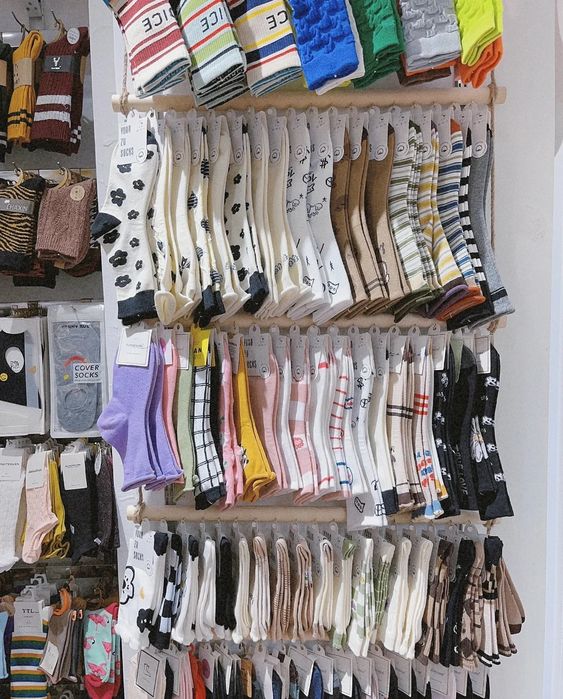

When you source custom socks, “OEM” and “ODM” are useful terms only when they lead to a clear next step. The practical question is: how complete is your product direction today, and what kind of development support do you need before approving a sample?
GoodStartSocks is a factory-direct OEM and ODM custom sock manufacturer in Zhuji, Zhejiang, China. We work with B2B buyers on custom development, samples, bulk production and packaging discussions. Our standard starting MOQ is 500 pairs.
OEM and ODM in plain language
OEM: build from your defined direction
OEM is a strong fit when you already have artwork, a tech pack, approved references or precise brand requirements. The manufacturing discussion starts with turning those details into a workable sock construction.
- Your logo, pattern or artwork leads the development
- You specify priorities such as materials, size range and packaging
- The sample verifies how the design translates into knit
ODM: start with a product direction
ODM is useful when you have a market idea but need help turning it into a manufacturable product. You can adapt a sock style, height, colours, materials and packaging direction before moving into sampling.
- Start from the intended wearer, use case and retail position
- Use references to discuss construction and visual direction
- Refine the final specification through the sample process
Choose the route that reduces uncertainty
Neither route removes the need for a sample. The sample is where a concept becomes an approval decision: check fit, stretch, logo clarity, colour direction, texture, cuff feel and packaging presentation before bulk production begins.
| Your starting point | Most useful next step |
|---|---|
| Complete artwork and clear technical requirements | Share the files and request an OEM feasibility discussion. |
| Logo and a few visual references | Clarify the sock type, target customer, quantity and must-have details before sampling. |
| A broad collection idea without a finished design | Use an ODM discussion to define the product direction, then approve a sample before production. |
What to send for an accurate custom sock quote
A complete first message gives a factory enough context to discuss the practical options. You do not need a finished technical pack, but do include the decisions you have already made.
Quote-request checklist
- Intended sock type and height
- Artwork, logo or clear visual references
- Estimated quantity and size range
- Material direction and required features
- Packaging idea, delivery destination and target date
For a step-by-step format, use our custom sock project-brief checklist. If you are still defining the construction, compare our custom sock styles and material guide first.
Plan the sample and bulk-production stage
At GoodStartSocks, sample preparation is typically about 3–7 days. Bulk production is typically about 30 days after sample approval. These are planning guides: the final schedule depends on the construction, materials, artwork, size breakdown, packaging, quantity and production schedule.
Before approving bulk production, keep the approved sample with the artwork version, measurements and packaging notes. That reference helps keep repeat orders aligned. For more production-planning detail, read the custom socks MOQ guide and our first-order manufacturing guide.
Start the right conversation
Whether your project is OEM or ODM, send the available details in one message. We can discuss a suitable route for your custom sock project from our Zhuji factory.
Request a Custom Sock Quote →